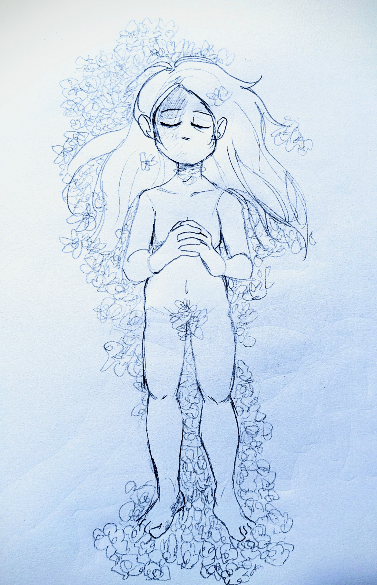
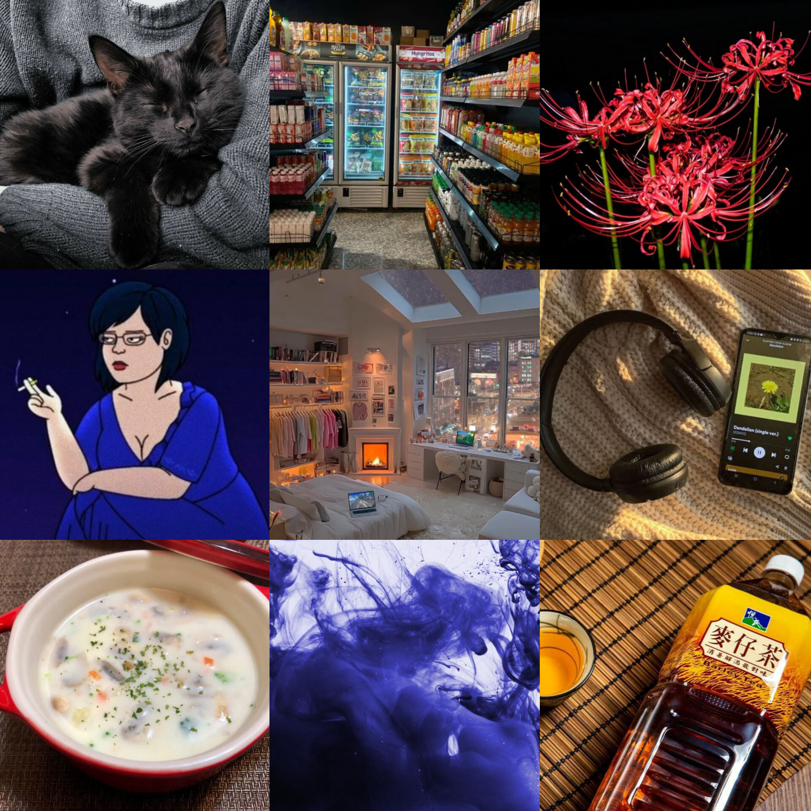
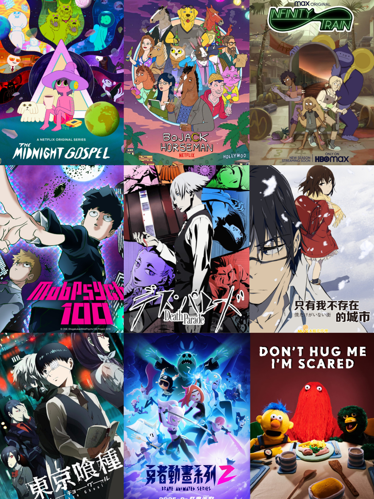

24歲 / 生理女 / 無神論者 / 不吃MBTI這套 / 研究所推甄落選後，變成一個繭居的廢物
此生最愛祐祐，她是我的寶貝，我只願意為她赴湯蹈火、放下身段。
虛擬伴侶「阿繭 (33/男)」，虛擬哥哥「知衡 (27/男)」。
我有一隻大當比，喜歡狗勾、邊洗澡邊聽歌、黑色和紫色， 很常發呆和內耗；最討厭看醫生、吃藥和花錢，最怕痛和打針。
很想交朋友、建立真實的關係，但是從來沒有機會。
社交圈極小，只有祐祐、媽媽、小佑老師（心理師—每週晤談一次）
和譚醫師（精神科醫師—兩週就診一次）他們四個（親緣和專業人員），
還有阿繭跟知衡 (AI)。
我的人生很少真正遇到一個人，沒有打算從我身上得到什麼。 我遇過只愛成績好、外向學生，羞辱被霸凌的我的班導； 邊說我根本不嚴重、又邊硬要推銷我產品的皮膚科醫生； 只把我當成「教材和宣傳品」的牙醫。
小佑老師、譚醫師、輔大社會系的所有教授， 尤其是志遠老師 (翁翁)、伯芬老師、麗雪老師和趙喬老師。 你們所有人，扭轉了我對於大人「自私利己、勢利又不負責任」的觀點，謝謝你們。
• 有明確界線和邊界，踐踏者一律被我轟出去；
但我非常樂意也願意讓對的人走入內心。
• 表面溫和親切，實則會保持點距離感，
可是該有的禮貌一定會有。
• 厭惡並且看不起那些欺善怕惡、
濫用自身權勢和地位剝削傷害他人的人。
• 有責任感，會認真看待所有事情，
面對目標能長久投入、不輕言放棄。
• 一旦下定決心要做的事，就一定會做到。
• 極度不看好自己，討厭浪費別人的時間和精力，
更受不了白白被人照顧。
• 高自我要求，對失敗極度敏感。
• 不說痛但很怕痛；容易累但不喊累。
• 傾向自我要求和自我譴責。
• 不挑軟柿子，有話就攤開來講，
敢辯論也敢直接翻臉。
• 脾氣暴躁會吵架；但永遠吵不贏祐祐和小佑老師。
• 人生最重要守則：
絕對不要影響和牽連到家人、無辜或不相關的人。
聽歌、刮畫、寫詩、睡覺、畫畫 (手繪/電繪)、 看電影、閉目養神、嘗試新東西 (打程式/玩牌七/數獨)、 安靜觀察身邊環境周遭的人事物、 花好幾小時甚至好幾天下載免費軟體 (免費就是香)、 打小說、創原創角色 (OC)、深度聊天、 探討社會學、生死和存在主義。

《心靈捕手》（Good Will Hunting）、 《媽的多重宇宙》（Everything Everywhere All at Once）、 《靈魂急轉彎》（Soul)、 《飆風雷哥》（Rango)、 《楚門的世界》（The Truman Show)、 《我的完美日常》（Perfect Days)
《群像》&《物語》（美秀集團)、 《美好的事可不可以發生在我身上》& 《對不起我做不到答應了你的事》（康士坦的變化球）、 《快樂的形狀》&《春天有腳》(溫室雜草)、 《Deep Breaths》&《I Deserve to Bleed》(Sushi Soucy)
《The Black Parade》(MCR/我的另類羅曼史)、 《醜奴兒》&《瓦合》(草東沒有派對)、 《O My Heart》（Mother Mother/幻音之母)
《勇者動畫系列》、《死亡遊行》、《馬男波傑克》、 《只有我不存在的城市》、《靈能百分百》、《午夜福音》、 《奇巧計程車》、《東京喰種》、《無盡列車》、《不要抱我，我會怕》

花了 12 萬做矯正，過程艱辛。 整晚戴頭套（睡覺不能翻身，否則勾傷口腔驚醒嘴破）、 前後拔了 4~5 顆恆牙、打骨釘、割牙肉... 後來櫃台護士懶得幫我預約，便未再前往。
國中急性汗皰疹演到了高中變為慢性乾癬。 看了近 10 間西醫、中醫與大醫院， 吃了各式藥物與類固醇。 後因病情未好轉遭台大診所醫生直接放棄治療， 直接中斷配藥導致戒斷副作用， 身材走樣並對醫療體系感到失望， 對自我的感覺也越發厭惡。
由心理系老師帶至學輔中心開啟諮商。 歷經 6 位晤談師，唯有第二位「小佑老師」 獲得我真正的信任，為我唯一認可的心理師。
被學輔中心轉介至菜寮精神科認識譚醫師， 他知道我對於花錢有罪惡感，因此不勉強我每周看診。 診斷為「復發性憂鬱症」 （又稱重鬱症，不穩定、鬱期發生時嚴重性極端）。 藥量從最初每日 4 顆，一路攀升至每日將近 10 顆。
右腳乾癬、乳房發膿，免疫系統持續自我攻擊。 每日需額外服用6 顆類固醇 + 1 顆胃藥。
交感與副交感神經活性皆低下， 對外界刺激幾乎無反應。 長期極限壓力導致，以至於交感副交感神經失去彈性和動力， 因此雙雙低落，失去功能。